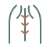
Боль и напряжение
в спине
Тянущая, ноющая или острая боль в разных отделах спины.
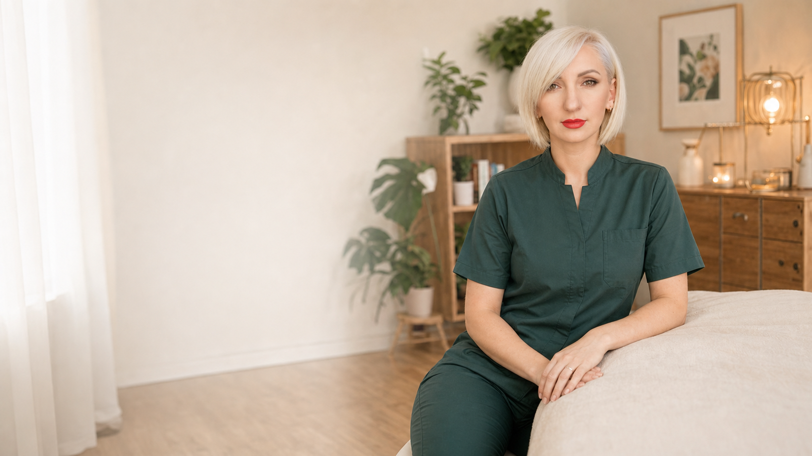
Индивидуальный остеопатический приём для взрослых и детей.
Бережная диагностика состояния организма и подбор
подходящей тактики работы.

Тянущая, ноющая или острая боль в разных отделах спины.
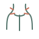
Скованность, напряжение, ограничение движений.
Тяжесть, сдавливание, боль в затылке и висках.
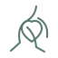
Сложности при движении, чувство скованности.
Боль, усталость, нарушение восстановления.
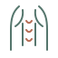
Повышенный тонус, спазмы, чувство усталости.
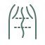
Наклон корпуса, сутулость, перекосы.
Беспокойство, колики, нарушения сна, последствия родовых травм.
Остеопатический приём не заменяет экстренную медицинскую помощь.
При острых или угрожающих симптомах обратитесь к врачу или вызовите скорую помощь.
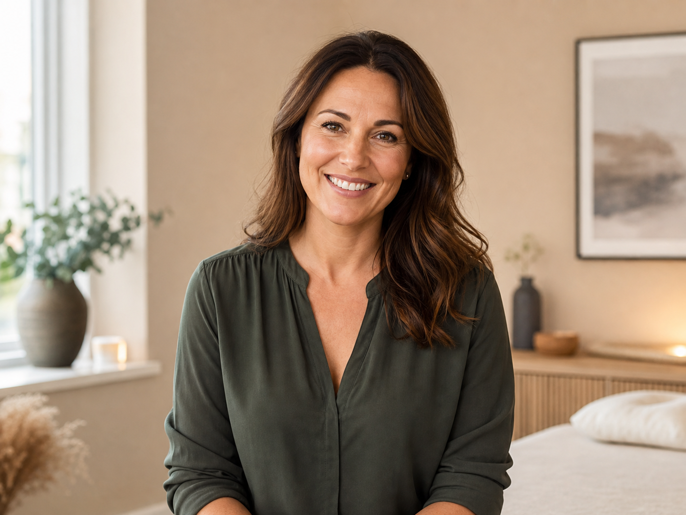
Для восстановления, уменьшения напряжения и усталости.
Обсудить ситуацию со специалистом →Для мягкой поддержки при коликах, нарушениях сна, последствиях родов.
Обсудить ситуацию со специалистом →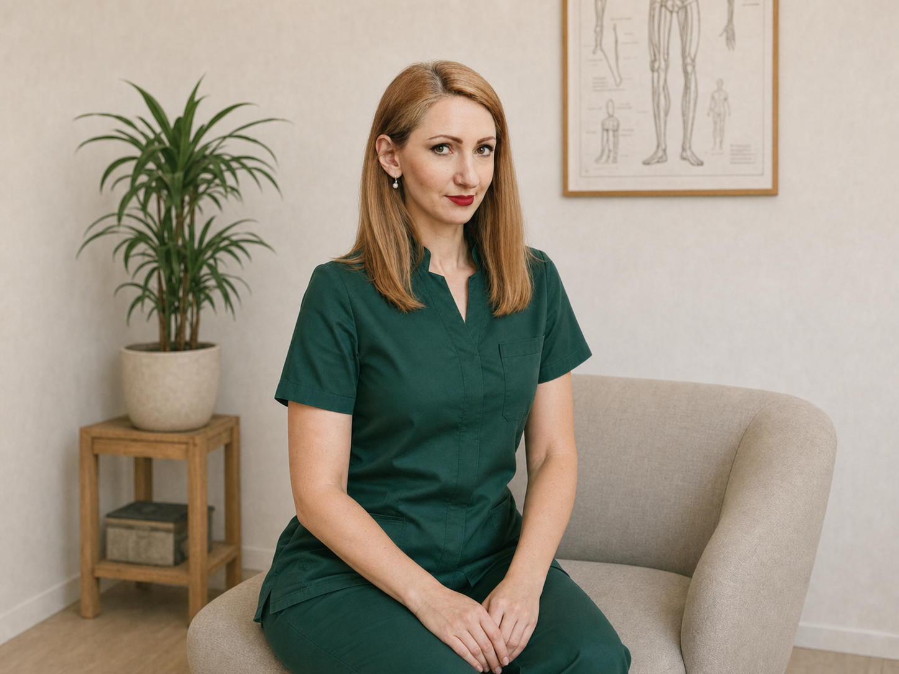
Врач-остеопат
“На первом месте — безопасность пациента,
внимательный сбор анамнеза и понятное
объяснение каждого этапа приёма.
Перед публикацией необходимо проверить актуальность документов, реквизитов и право на осуществление медицинской деятельности.
Обсуждаем жалобы, образ жизни, перенесённые заболевания и ожидания от приёма.
Проводится осмотр, оценка осанки, движений и тканей для поиска возможных причин дискомфорта.
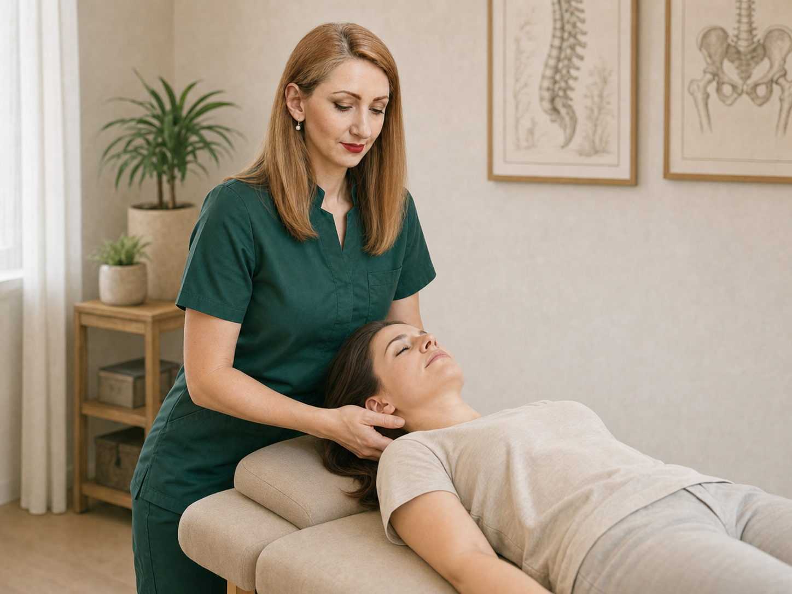
Применяю мягкие техники, направленные на восстановление баланса и улучшение подвижности тканей.
Обсуждаем ощущения, даю рекомендации по режиму, упражнениям и дальнейшему плану.
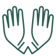
Бережное воздействие на ткани для улучшения их подвижности и функционирования.
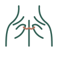
Снижаю избыточное напряжение и улучшаю эластичность мышц и фасций.
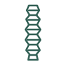
Работаю с суставами и мягкими тканями для свободного и комфортного движения.
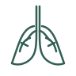
Помогаю восстановить свободное дыхание и снизить влияние стресса на тело.
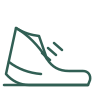
Подбираю щадящую активность и помогаю рационально распределять нагрузку.
Простые упражнения для поддержания результата между приёмами.
Длительность — уточняется
Цена — данные для замены
ЗаписатьсяДлительность — уточняется
Цена — данные для замены
ЗаписатьсяДлительность — уточняется
Цена — данные для замены
ЗаписатьсяОплата и правила переноса — уточнить
Документы для налогового вычета —
только при наличии услуги
Окончательное решение о возможности
проведения приёма принимается
специалистом после беседы
и оценки состояния.
«Анна очень внимательно выслушала и подробно объяснила, что может влиять на моё состояние. После приёма стало легче и понятнее, что делать дальше».Дата публикации — данные для замены
«Понравилось спокойное отношение и ясные рекомендации. Без лишних обещаний, всё по делу и с уважением к моим ощущениям».Дата публикации — данные для замены
«Были с ребёнком на приёме — Анна нашла подход, объяснила простыми словами, что важно наблюдать и как помочь дома».Дата публикации — данные для замены
«Чувствуется опыт и внимательность к деталям. После приёма появилась ясность и спокойствие».Дата публикации — данные для замены
Результаты и впечатления индивидуальны и не гарантируют аналогичный эффект у других пациентов.
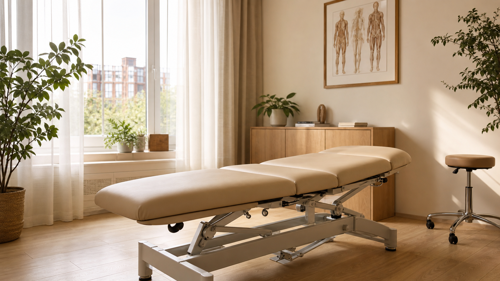
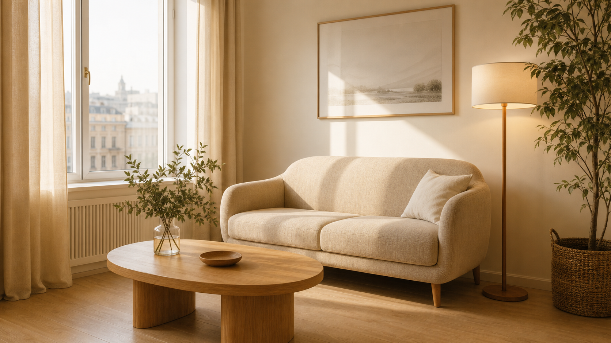
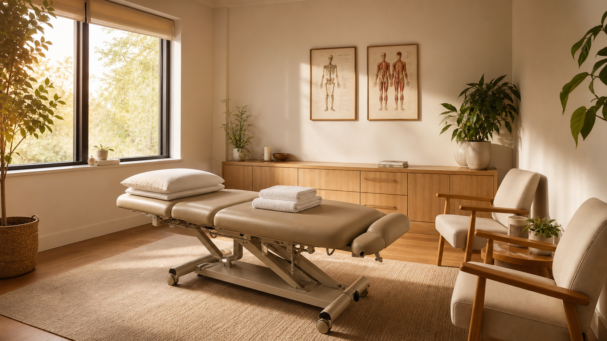
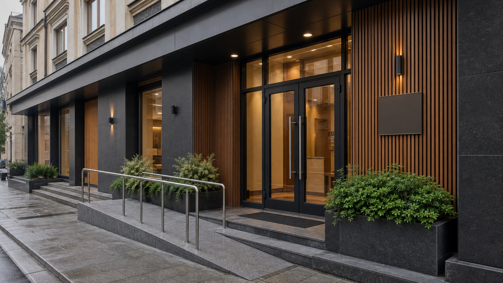
Как добраться5 минут пешком от метро
Фрунзенская
ПарковкаГородская парковка
у здания
ДоступностьЕсть лифт и пандус,
удобный вход
Можно с сопровождающимНа приём можно прийти
с близким человеком
Остеопатические техники мягкие и щадящие. Вы можете ощущать лёгкое давление или растяжение тканей, но приём не должен вызывать боль. Мы постоянно уточняем ваши ощущения и подбираем комфортный для вас объём работы.
Продолжительность зависит от возраста пациента, цели обращения и объёма необходимой диагностики. Точное время администратор уточнит при записи.
Количество встреч определяется индивидуально. После первого приёма специалист оценит динамику и предложит дальнейший план без назначения лишних посещений.
Если у вас есть результаты обследований, заключения врачей или снимки, возьмите их с собой. Они помогут лучше понять историю состояния.
Возможность приёма обсуждается индивидуально с учётом срока беременности, самочувствия и рекомендаций наблюдающего врача.
Возрастные ограничения и возможность детского приёма необходимо заранее уточнить у администратора и специалиста.
Массаж преимущественно работает с мягкими тканями. Остеопат оценивает взаимосвязь различных структур тела и применяет мягкие диагностические и мануальные техники.
При сильной внезапной боли, травме, высокой температуре или резком ухудшении состояния сначала необходима срочная медицинская оценка.
Выберите свободную удобную одежду, которая не ограничивает движения. При необходимости специалист заранее сообщит дополнительные рекомендации.
Свяжитесь с администратором по телефону или в удобном мессенджере. Пожалуйста, сообщите о переносе как можно раньше.
Точный адрес — данные для замены
Этаж и кабинет — уточнить
Часы работы — по записи